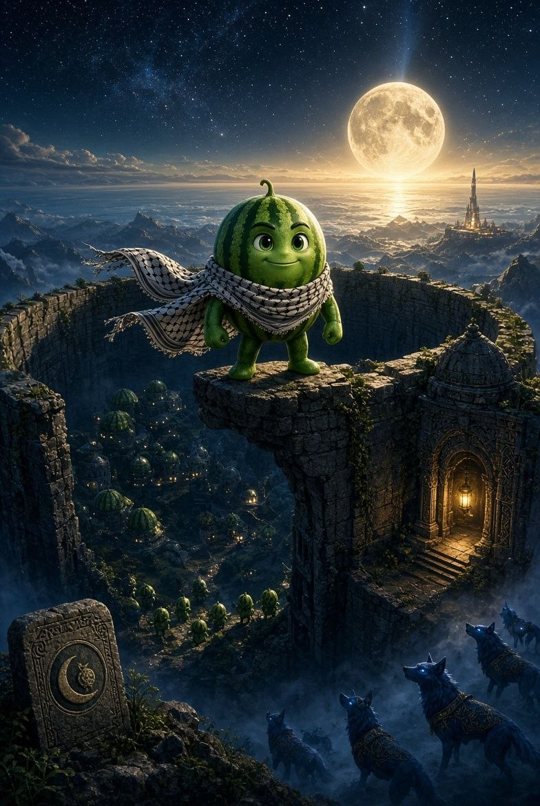
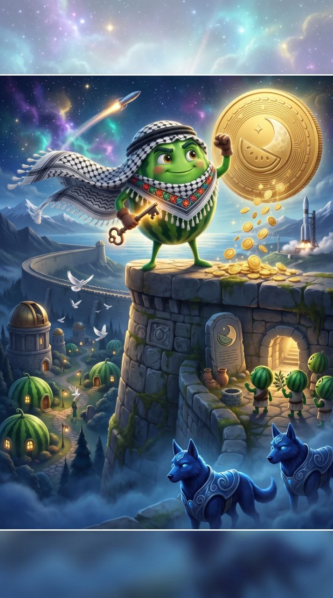

The Book of the Wall • A Legend of Freedom & Courage

From thriving dreamers to prisoners of fear.
The people of Melonstine were not always prisoners. Long before the Blue Dogs arrived, Melonstine was a thriving civilisation of dreamers, explorers and builders.
The Melons studied the stars. They built observatories. They travelled far beyond the known lands, believing that every horizon was an invitation to discover more.
A strange fear spread across the world. People began choosing safety over freedom, control over curiosity, and comfort over ambition.
The Blue Dogs seized the opportunity. Convincing the rulers that the outside world was dangerous, they offered protection and peace. Thus, the Great Wall was built—a prison celebrated as a salvation.
The prophecy Kuff discovered was incomplete. A second fragment exists somewhere beyond the wall, long sought for destruction by the Blue Dogs.
Ancient records speak of a hero older than any king or Blue Dog. All that survives is a carved symbol beneath the ancient observatory: a melon and a moon. Kuff is not merely creating a journey; Kuff is continuing one.

Not soldiers, but believers, dreamers, and builders.
New believers beginning their journey and embracing the vision of Melonstine.
Active members helping the dream spread across communities far and wide.
Those brave enough to challenge fear and scale the heights of the Great Wall.
Trusted warriors dedicated to protecting and carrying forward the mission.
The legendary few who guide the future of Melonstine beyond the reach of walls.
Beyond the moon lies The First Dream—a mysterious light older than Melonstine itself. Even the Blue Dogs fear it, yet ancient texts reveal it is intricately tied to Kuff's true destiny.